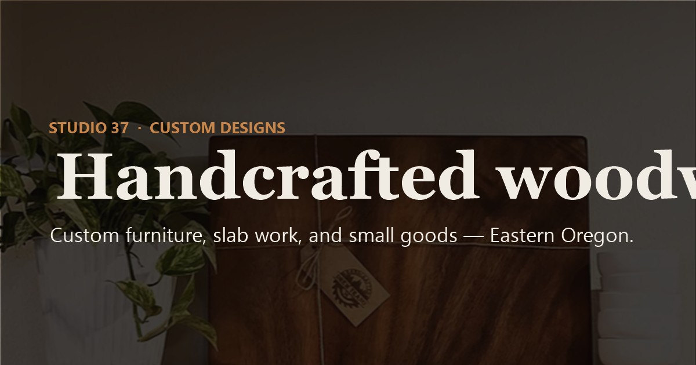

Leads and estimates
Track inquiries and prepare project quotes.
Pick the kind of build that fits your business today. Every project begins with a real conversation and a scope shaped around you.
Most local businesses need a site that looks the part, loads quickly, and tells customers what they do and how to reach them. We start with an interview about your business, customers, and neighborhood, then shape the site around those answers.
You review real working pages, not a deck of mockups. We refine the details with you and get the finished site ready to launch.
From $250 · fixed-price options
View presence pricingWhen you’re ready to take payments, we build the operation around the storefront: catalog, checkout, and the tools you’ll use to manage inventory, orders, leads, and media.
Studio37 Custom Designs is the reference build: a product catalog with Stripe checkout and an admin panel for the day-to-day work behind it.
Custom scoped after an interview
See the Studio37 case study
Restaurants need a menu people can read on a phone and an ordering flow that works for the team. BWE’s restaurant platform gives each restaurant a branded ordering experience on a shared backend.
Custom scoped
Talk about a restaurant buildOff-the-shelf software can make a team change how it works. We map the process first, then shape the right tool around the people and work involved.
Bulwark is an in-development construction management platform connecting leads, estimates, project work, records, payments, and customer communication.
Custom scoped
Discuss a custom toolTrack inquiries and prepare project quotes.
Coordinate jobs, work orders, and schedules.
Keep permit details and inspection records together.
Connect project completion with billing.
Share documents, payments, and project questions.
Give trade partners access to relevant job details.
Tell us what your business needs. We’ll help figure out the right size of project.